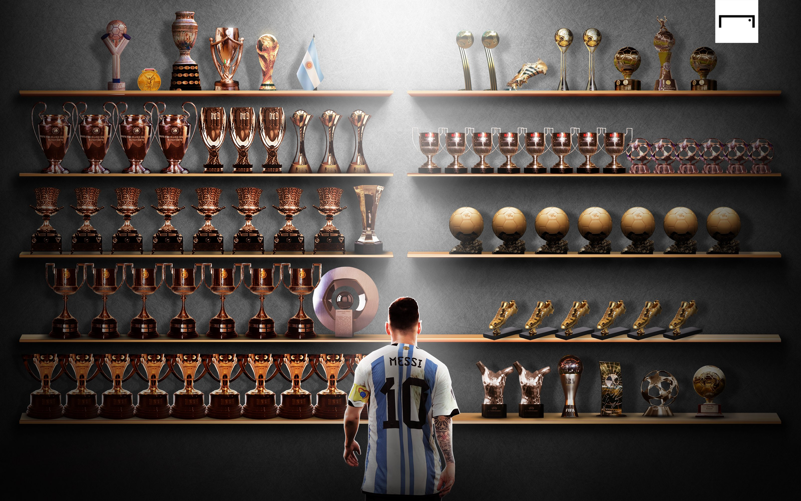

← Back to Top 50
#1
Lionel Messi
Lionel Messi is football's greatest player, famous for his dribbling, passing, finishing, vision, and unmatched consistency across nearly two decades.
Country: Argentina
Position: Forward / Playmaker
Main Clubs: Barcelona, PSG, Inter Miami
Era: 2004-present
Known For: Dribbling, playmaking, goals, free kicks
Quick Facts
Full Name
Lionel Andrés Messi
Born
June 24, 1987
National Team
Argentina
Preferred Foot
Left
Career Story
Messi joined Barcelona as a young teenager and became the face of one of the greatest club teams ever. His combination of close control, vision, passing, finishing, and calmness made him almost impossible to stop. After years of club dominance, he completed his international legacy by winning the Copa América and the 2022 FIFA World Cup with Argentina.
Club History
Barcelona
His legendary prime years, full of records, trophies, goals, and assists.
2004-2021
Paris Saint-Germain
A shorter chapter in France, adding league titles and another stage of his career.
2021-2023
Inter Miami
Brought global attention to MLS and continued creating magic late in his career.
2023-present
Stats Snapshot
Official Senior Goals
919
Career Assists
420
Ballon d'Ors
8
World Cups
1
Official senior club and senior international goals. Youth, exhibition, and unofficial matches are excluded. Total checked on August 1, 2026.
Trophy Cabinet

Signature Skills
Dribbling
Low center of gravity, tiny touches, and elite balance made him impossible to mark.
Playmaking
Messi could create chances from anywhere with through balls, cutbacks, and switches.
Finishing
Clinical with his left foot, especially when cutting inside or placing shots low.
Iconic Moments
2022 World Cup Win
Led Argentina to the trophy that completed his international legacy.
Barcelona Prime
Dominated European football with Barcelona during one of the greatest club eras ever.
El Clásico Performances
Produced unforgettable goals and assists against Real Madrid across many seasons.
YouTube Highlights
Ten Greatest Barcelona Goals
Open the official Barcelona video on YouTubeLegacy Scorecard
Dribbling
10/10
Playmaking
10/10
Finishing
9.6/10
Consistency
10/10
Big Game Impact
9.8/10
Why He Ranks #1 All Time
I put Lionel Messi at number one because I think he's the greatest soccer player ever. He's won almost everything there is to win, including the World Cup, and has been one of the best players in the world for a long time. What stands out to me is how he can score, create chances for his teammates, and dribble past defenders like no one else. He's always been consistent and has delivered in big games. There are a lot of great players in football history, but I think Messi has done enough to deserve the number one spot.